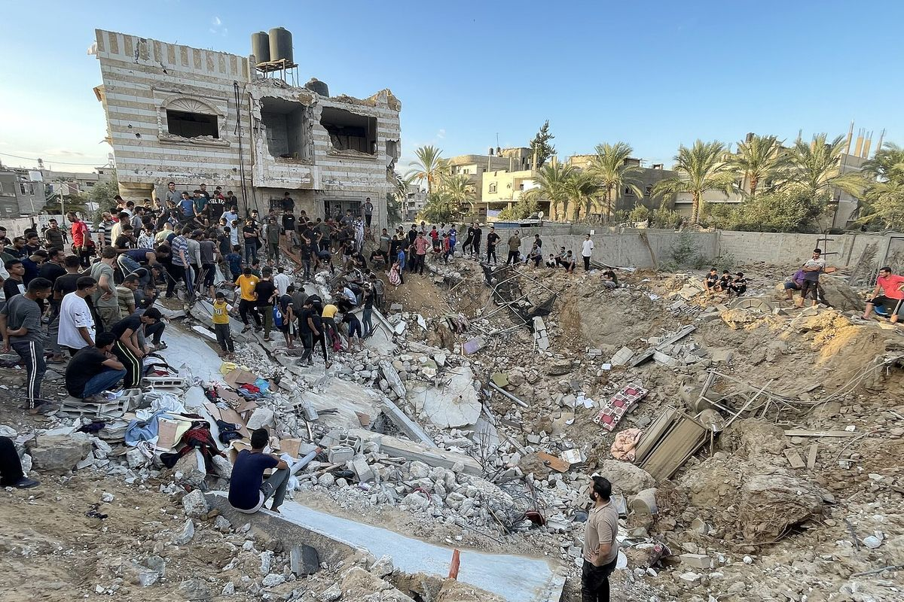

شخص مفقود في قطاع غزة منذ تشرين الأول/أكتوبر 2023
الوضع الراهن
منذ تشرين الأول/أكتوبر 2023، فُقد أكثر من 10,000 شخص في قطاع غزة. ويُعتقد أن معظمهم يرقدون تحت أنقاض المنازل المدمرة، فيما انفصل آخرون عن عائلاتهم خلال النزوح، أو يُفترض أنهم محتجزون، أو دُفنوا دون التعرف على هوياتهم. ويشكل النساء والأطفال قرابة نصف الحالات المسجلة.
تسير عمليات الانتشال ببطء، إذ انتُشل معظم الرفات يدوياً بسبب رفض إدخال الآليات الثقيلة اللازمة لإزالة الأنقاض.
من هم المفقودون
تحت الأنقاض
أشخاص يُعتقد أنهم مدفونون في المباني المدمرة
منفصلون خلال النزوح
أشخاص انفصلوا عن عائلاتهم خلال النزوح
يُفترض أنهم محتجزون
أشخاص تعتقد عائلاتهم أنهم احتُجزوا
مدفونون دون تحديد الهوية
رفات دُفنت في قبور مؤقتة أو غير معلَّمة دون التعرف على أصحابها
مختفون قسراً
أشخاص يُخفى مصيرهم وأماكن وجودهم
الأثر على العائلات
تعيش العائلات حالة من الفقدان الغامض، فلا هي قادرة على الحداد ولا على المضي قدماً. وفي غياب تأكيد الوفاة، تواجه كذلك غموضاً قانونياً في ما يتعلق بالولاية على الأطفال والنفقة والميراث والحالة الاجتماعية والممتلكات، إلى جانب الضائقة الاقتصادية. ويتأثر بذلك على نحو خاص الأطفال غير المصحوبين والأسر التي تعيلها نساء.
لماذا الوقت حاسم
بدأت عمليات إزالة الأنقاض وإعادة الإعمار. وكل موقع يُزال قبل توثيقه قد يضيع إلى الأبد، ومعه المعلومات اللازمة للتعرف على هوية المدفونين فيه. كما أن جمع العينات المرجعية من سكان نازحين يستغرق سنوات لا أشهراً. لذلك يجب أن يبدأ العمل قبل توفر الوصول الكامل.
لماذا تبقى حالات كثيرة دون حل
لا يزال تحديد مصير المفقودين والمختفين قسراً في غزة تحدياً إنسانياً هائلاً. فقد أدى الدمار المستمر، والكميات الهائلة من الأنقاض، والأضرار التي لحقت بمواقع الدفن، ومحدودية قدرات الطب الشرعي وتحديد الهوية بالحمض النووي، وانقطاع الاتصالات، وتقييد الوصول إلى المناطق المتضررة، والغموض المحيط بالاحتجاز، إلى تعقيد الجهود الرامية إلى تحديد أماكن المفقودين وانتشالهم والتعرف على هوياتهم وكشف مصيرهم. ونتيجة لذلك، لا تزال آلاف العائلات تعيش بلا إجابات، عاجزة عن معرفة مصير أحبائها أو ممارسة حقها في الحقيقة والكرامة وطيّ صفحة الألم.
61 مليون
طن من الركام خلّفها الدمار
~65%
من مساحة القطاع خاضعة لقيود على الوصول

01 / 06
مدفونون تحت الأنقاض مع محدودية قدرات الانتشال
لا يزال كثير من المفقودين مدفونين تحت أنقاض المنازل ومراكز الإيواء والمباني العامة المدمرة. وقد رُفض إدخال الآليات الثقيلة، وانتُشل معظم الرفات يدوياً، ما لم يترك للعائلات خياراً سوى البحث بنفسها بين الأنقاض غير المستقرة، معرّضةً سلامتها للخطر.
مثالبعد أكثر من عامين على تدمير منزله، كان محمود حماد، وهو أب من مدينة غزة، لا يزال يغربل أنقاضه بمنخل بحثاً عن رفات زوجته وأطفاله.

02 / 06
تقييد الوصول وضياع الأدلة
في مناطق كثيرة ينتشر فيها الجيش الإسرائيلي، تستمر الجرافات في تسوية الأرض دون أي اعتبار للموتى تحت الأنقاض. وتضيع بذلك رفات بشرية ومقتنيات شخصية وأدلة حاسمة، ما يزيد صعوبة معرفة العائلات لمصير ذويها ويقطع الطريق على أي جهود مستقبلية لكشف الحقيقة.
مثالفي حي الشجاعية بمدينة غزة، لم تسمع دلال فرج أي خبر عن زوجها طه وابنها نصر البالغ من العمر 16 عاماً منذ أن أصابت غارة منزلهم في 8 تشرين الأول/أكتوبر 2023. وفي آذار/مارس 2026، رصدت صور الأقمار الصناعية إزالة الأنقاض في الحي، حيث تقوم الآن قاعدة عسكرية.

03 / 06
الدفن الطارئ والقبور غير المعلَّمة والمقابر المتضررة
دُفن كثير من الضحايا دون توثيق سليم، في قبور مؤقتة أو جماعية، ما يجعل التعرف على هوياتهم وتتبع عائلاتهم أمراً بالغ الصعوبة. كما تعرضت المقابر للعبث، فلم تعد عائلات دفنت ذويها قادرة على العثور على قبورهم، وباتت الرفات أصعب في التعرف عليها.
مثالعجزت عائلات عن تحديد أماكن قبور ذويها في مقبرة البطش بمدينة غزة، بعد أن جرفها الجيش الإسرائيلي بالآليات الثقيلة والجرافات في كانون الثاني/يناير 2026.

04 / 06
محدودية القدرة على تحديد الهوية
لا توجد في غزة مرافق لفحص الحمض النووي، ووفقاً لمفوضية الأمم المتحدة السامية لحقوق الإنسان، أعاقت القيود الإسرائيلية على مواد مثل أطقم فحص الحمض النووي عملية تحديد الهوية. وإلى جانب آلاف الرفات التي تنتظر التعرف عليها، أعادت إسرائيل جثامين 360 فلسطينياً بموجب ترتيبات وقف إطلاق النار؛ ولم تتمكن العائلات حتى نهاية كانون الثاني/يناير 2026 إلا من التعرف على نحو 100 منها، بحسب وزارة الصحة.
مثالفي مستشفى ناصر بخان يونس، تتجمع العائلات في قاعة كبيرة لمشاهدة صور الجثامين المُعادة على شاشة، على أمل التعرف على قريب من ملابسه أو علامات مميزة أخرى.

05 / 06
الاحتجاز غير المُعلن والإخفاء القسري
لا تعرف عائلات كثيرة ما إذا كان قريبها المفقود قد نزح أو قُتل أو أنه محتجز. ومع استمرار تعليق السلطات الإسرائيلية لزيارات اللجنة الدولية للصليب الأحمر إلى أماكن الاحتجاز، يبقى الأهالي دون معلومات عن مصير أحبائهم وأماكن وجودهم.
مثالفي تشرين الأول/أكتوبر 2023، غادر رجل من قيزان النجار جنوب قطاع غزة منزله لأداء صلاة العصر في مسجد الحي ولم يعد. وبعد أكثر من عامين من استفسارات عائلته، لم تحصل على أي إجابة.

06 / 06
انقطاع الاتصالات وضياع السجلات
أدى انهيار أنظمة الاتصالات والسجلات، بما فيها السجل المدني، إلى صعوبة تسجيل الحالات وتبادل المعلومات وتنسيق عمليات البحث بالنسبة للعائلات والسلطات والمنظمات الإنسانية.
مثالفي حزيران/يونيو 2025، كانت أنوار حواس تبحث يومياً عن شقيقها هادي البالغ من العمر 17 عاماً، الذي غادر المنزل قبل ثلاثة أسابيع ولم يعد. ومع انقطاع خدمات الإنترنت والهاتف، علّقت صورته على الجدران في مدينة غزة وجابت الشوارع بحثاً عنه.
لماذا يأتي السجل أولاً. تؤدي هذه العوامل مجتمعةً إلى تأخير حق العائلات في المعرفة. والمعلومات التي تُجمع من العائلات الآن هي ما سيجعل تحديد الهوية ممكناً لاحقاً.
الفريق الوطني
أُنشئ الفريق الوطني لمتابعة ملف المفقودين والمختفين قسراً بموجب قرار مجلس الوزراء رقم 19/95/01 الصادر بتاريخ 27 كانون الثاني/يناير 2026، استناداً إلى القانون الأساسي المعدل والأنظمة الناظمة لعمل مجلس الوزراء واللجان الحكومية. وهو الجهة الوطنية المختصة والمرجعية الوطنية الوحيدة لملف المفقودين.
- الولاية
- إنسانية: الكشف عن مصير كل شخص مفقود ومختفٍ قسراً ومكان وجوده، ودعم عائلاتهم
- النطاق
- جميع المفقودين والمختفين قسراً دون استثناء أي فئة، أياً كانت ظروف الاختفاء أو تاريخه
- الرئاسة
- معالي وزير العدل، وتتولى وزارة العدل مهام المقرر
- العضوية
- الوزارات المختصة والجهاز القضائي والمؤسسات الوطنية ومؤسسات المجتمع المدني
- الهيئة العامة
- تجتمع شهرياً، وتعتمد قرارات الفريق وخططه وبروتوكولاته
- الأمانة
- أمانة فنية دائمة تستضيفها وزارة العدل
- اللجان الفرعية
- ست لجان فرعية متخصصة تتولى العمل الفني بين اجتماعات الهيئة العامة، لكل منها جهة قائدة ومنسق مسمّى
اللجان الفرعية المتخصصة الست
التوثيق والمنصة الإلكترونية
وزارة العدلمجال العمل: منصة وطنية موحدة للبلاغات؛ توحيد قواعد البيانات القائمة؛ حماية البيانات
الطب الشرعي وتحديد الهوية
وزارة العدل، بالشراكة مع وزارة الصحةمجال العمل: بروتوكولات الطب الشرعي وتحديد الهوية؛ التعامل الكريم مع الرفات وتسليمها؛ جمع العينات المرجعية للحمض النووي من العائلات
الشؤون القانونية والتشريعية
وزارة العدلمجال العمل: الوضع القانوني للمفقودين وعائلاتهم؛ شهادات الغياب؛ حماية مواقع الدفن
دعم العائلات والعمل النفسي الاجتماعي
وزارة التنمية الاجتماعيةمجال العمل: دعم متكامل نفسي واجتماعي وقانوني واقتصادي؛ تمثيل العائلات في أعمال الفريق
التعاون الدولي والشراكات
وزارة العدل، بالشراكة مع وزارة الخارجية والمغتربينمجال العمل: الشراكات وتبادل الخبرات الفنية والاستعانة بالخبرات الدولية
الإعلام والاتصال
وزارة العدلمجال العمل: إعلام الجمهور؛ التواصل مع العائلات؛ حماية خصوصية العائلات
تضم اللجان الفرعية في عضويتها وزارتي الداخلية والصحة، ومجلس القضاء الأعلى، والنيابة العامة، وديوان قاضي القضاة، والهيئة المستقلة لحقوق الإنسان، وجمعية الهلال الأحمر الفلسطيني، وهيئة شؤون الأسرى والمحررين، والجهاز المركزي للإحصاء الفلسطيني، ومؤسسات المجتمع المدني. ويُستعان بممثلين عن العائلات في لجنة دعم العائلات.
المبادئ التوجيهية
العائلات في صميم العمل
العائلات أصحاب حقوق لا مجرد مستفيدين، تشارك في البحث وتُبلَّغ أولاً، مباشرةً وشخصياً
الغاية الإنسانية
البحث عن الإجابات يأتي أولاً، وهو الغاية الوحيدة للفريق
التوثيق الدقيق
تُسجَّل كل حالة مرة واحدة وفق معيار موحد، وكل معلومة تُقرن بمصدرها وتاريخها
جهد وطني واحد
توحيد الجهود الوطنية والدولية وتنسيقها من خلال الفريق
المساواة في المعاملة
لا تُحدَّد الأولوية أبداً بناءً على شهرة الحالة أو الاهتمام الإعلامي أو مكانة العائلة أو الانتماء السياسي
آلية العمل: المراحل الخمس
يسير العمل وفق خمس مراحل متتابعة بالنسبة لكل حالة أو موقع بعينه، لكنها تجري بالتوازي على مستوى الملف ككل. ولا تعتمد المرحلتان الأولى والثانية على الوصول إلى المواقع، ويمكن المضي فيهما الآن.
- 1
جمع المعلومات
يمكن المضي فيها الآنما تشملهتسجيل الحالات، ورقم وطني وملف موحد لكل حالة، وتجميع السجلات القائمة، والتوثيق الميداني
توقيت التنفيذمنذ الاعتماد، وبصورة مستمرة
- 2
جمع العينات المرجعية من العائلات
يمكن المضي فيها الآنما تشملهجمع عينات مرجعية للحمض النووي من الأقارب بموافقة مستنيرة، ليتوفر المرجع قبل انتشال الرفات
توقيت التنفيذبالتوازي مع المرحلة الأولى
- 3
تقييم المواقع
ما تشملهسجل لمواقع الدفن يُبنى من سجلات الانتشال لدى الدفاع المدني والهلال الأحمر، وسجلات الدفن لدى وزارة الصحة، والصور والشهادات؛ وحماية المواقع وترتيب أولوياتها
توقيت التنفيذالسجل الآن؛ والمسح الميداني عند إتاحة الوصول
- 4
الانتشال والفحص
ما تشملهانتشال الرفات مع التوثيق الكامل وسلسلة الحيازة؛ والفحص الشرعي على يد مختصين
توقيت التنفيذعند توفر الوصول والقدرات
- 5
تحديد الهوية والتسليم
ما تشملهمطابقة النتائج مع معلومات العائلة والحمض النووي؛ وقرار مسبَّب بتحديد الهوية؛ وإبلاغ العائلة أولاً؛ وتسليم كريم للدفن
توقيت التنفيذمع صدور نتائج المرحلة الرابعة، وللحالات التي تُحل دون انتشال
الالتزامات تجاه العائلات
يعترف القانون الدولي الإنساني بحق العائلات في معرفة مصير ذويها وأماكن وجودهم. وهو حق للعائلة ذاتها، لا يُستوفى بمرور الزمن أو بالاعتراف العام، بل بإجابة عن شخص بعينه تُقدَّم إلى عائلته. وبناءً على ذلك:
- تُبلَّغ العائلة أولاً، مباشرةً وشخصياً، قبل أي طرف آخر.
- تحديد الهوية قرار رسمي مسبَّب يُقيَّد في السجل، ولا يُفترض افتراضاً أبداً.
- لا يُجرى أي نبش أو تحليل دون علم العائلة ومشاركتها.
- لا تُغلق أي حالة لعدم التوصل إلى نتيجة، وتتلقى كل عائلة نتيجة مكتوبة.
- لا يُفصح عن أي معلومات تخص حالة بعينها عبر القنوات العامة أو وسائل الإعلام.
- يرافق الدعم النفسي الاجتماعي دائماً عمليات جمع العينات والإبلاغ.
إذا كان أحد أفراد عائلتك مفقوداً
- احتفظ بالصور ووثائق الهوية والسجلات الطبية وسجلات الأسنان، وأوصاف الملابس والمقتنيات الشخصية.
- دوّن متى وأين شوهد قريبك آخر مرة، ومن كان برفقته.
- أبلغ عن الحالة مرة واحدة عبر القناة الوطنية الرسمية، لتُسجَّل في السجل الوطني المرجعي.
- إذا طُلب منك ذلك، قدّم عينة مرجعية: ستُستخدم حصراً للتعرف على هوية قريبك.
تسجيل مفقودين غزة
ساعدونا في توثيق المفقودين. يُسجَّل كل بلاغ مرة واحدة في السجل الوطني المرجعي.
تسجيل شخص مفقودالتعاون الدولي
يُنظَّم دعم الشركاء حول اللجان الفرعية الست ويُوجَّه من خلال الفريق الوطني. ويعمل الفريق مع اللجنة الدولية للصليب الأحمر، ومفوضية الأمم المتحدة السامية لحقوق الإنسان، وبرنامج الأمم المتحدة الإنمائي (بما في ذلك برنامج سواسية)، ومنظمة الأمم المتحدة للطفولة (يونيسف)، وهيئة الأمم المتحدة للمرأة، والاتحاد الأوروبي، وسويسرا، واللجنة الدولية لشؤون المفقودين، والمركز الدولي للعدالة الانتقالية.
وقّع الفريق مذكرة تفاهم مع لجنة المفقودين في قبرص. وتستند منهجيته إلى تجارب آليات البحث الوطنية التي اضطلعت بهذا العمل على نطاق واسع، بما فيها قبرص والبوسنة والهرسك وكولومبيا وكوسوفو، وتتبع إرشادات اللجنة الدولية للصليب الأحمر بشأن التعامل الكريم مع الموتى.
الصليب الأحمر الدوليالمفوضية السامية لحقوق الإنسانبرنامج الأمم المتحدة الإنمائي · سواسيةيونيسفهيئة الأمم المتحدة للمرأةالاتحاد الأوروبيسويسرااللجنة الدولية لشؤون المفقودين (ICMP)المركز الدولي للعدالة الانتقالية (ICTJ)لجنة المفقودين في قبرص
مجالات الدعم المطلوبة الآن
قاعدة البيانات الوطنية
السجل ومنصته الإلكترونية وفرق التوثيق الميداني
قدرات الطب الشرعي
مرافق تحديد الهوية والتبريد والمعدات في غزة، والتدريب المتخصص
جمع عينات الحمض النووي
جمع العينات المرجعية من العائلات، وإدخال أطقم جمع العينات، وقدرات المختبرات
توثيق المواقع وحمايتها
التحليل الجغرافي المكاني وحماية المواقع قبل إزالة الأنقاض وإعادة الإعمار
دعم العائلات
الخدمات النفسية الاجتماعية والمساعدة القانونية والتواصل الميسَّر
تواريخ رئيسية
نزوح جماعي في غزة؛ وارتفاع حاد في البلاغات عن المفقودين
طواقم الدفاع المدني تنتشل أكثر من 630 جثماناً ورفاتاً من تحت المباني المدمرة (حتى أيلول/سبتمبر 2026)
مجلس الوزراء يُنشئ الفريق الوطني
توقيع مذكرة تفاهم مع لجنة المفقودين في قبرص
الاجتماع الثالث للفريق الوطني بمشاركة الشركاء الدوليين
اجتماع فني مع برنامج الأمم المتحدة الإنمائي ومفوضية الأمم المتحدة السامية لحقوق الإنسان حول الطب الشرعي وقاعدة البيانات الوطنية